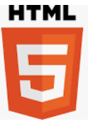
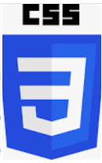
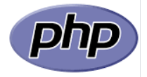
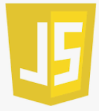

|  | Hypertext Markup Language je v informatice název značkovacího jazyka používaného pro tvorbu webových stránek, které jsou propojeny hypertextovými odkazy. | Zajišťuje obsah stránky |
|---|---|---|
|  | Kaskádové styly je v informatice jazyk pro popis způsobu zobrazení elementů na stránkách napsaných v jazycích HTML, XHTML nebo XML. | Starají se o vzhled stránky |
|  | PHP je skriptovací programovací jazyk. Je určený především pro programování dynamických internetových stránek a webových aplikací například ve formátu HTML, XHTML či WML. | Zajišťuje dynamické stránky |
|  | JavaScript je multiplatformní, objektově orientovaný, událostmi řízený skriptovací jazyk, jehož autorem je Brendan Eich z někdejší společnosti Netscape |